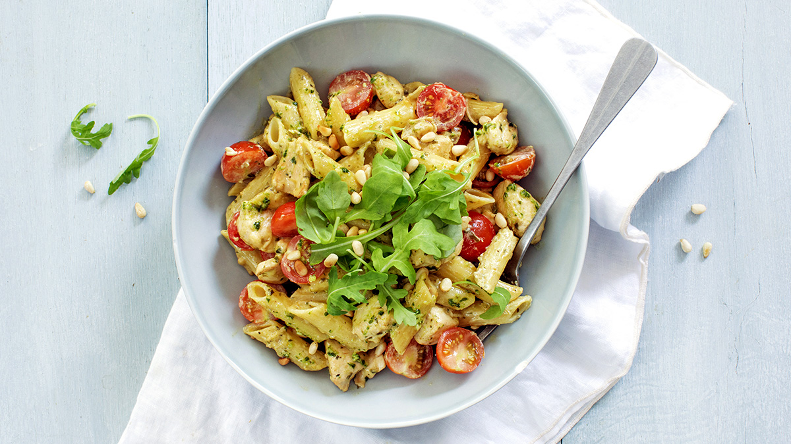

pasta pesto met kip
Ingredienten
- 300g pasta
- 400g kippenfilet
- 250ml room
- 250g cherry tomaatjes
- 1 ui
- 60g pijnboompitten
- handje rucolasla
- 4eetlepels pesto
- peper en zout
Bereiding
- Snipper het uitje en fruit even aan in een scheutje olijfolie. Voeg de blokjes kip toe en bak ongeveer 5 minuten. Kook ondertussen de pasta gaar. Voeg de (zelfgemaakte) pesto en room toe aan de kip en roer goed door. Proef nog even of er nog peper of zout bij moet.
- Laat de pestosaus een paar minuutjes zachtjes pruttelen. Voeg dan de gekookte pasta toe en schep er doorheen. Halveer de tomaatjes en roer ook door de pasta pesto en verwarm nog een minuutje mee. Serveer de pasta pesto in de pan of op een bord met een handje rucola en de geroosterde pijnboompitten.
- Tip: deze pasta pesto is ook lekker met geraspte kaas. Gebruik ook eens stukjes vegetarische kip voor een vegetarische variant op de kip pesto.